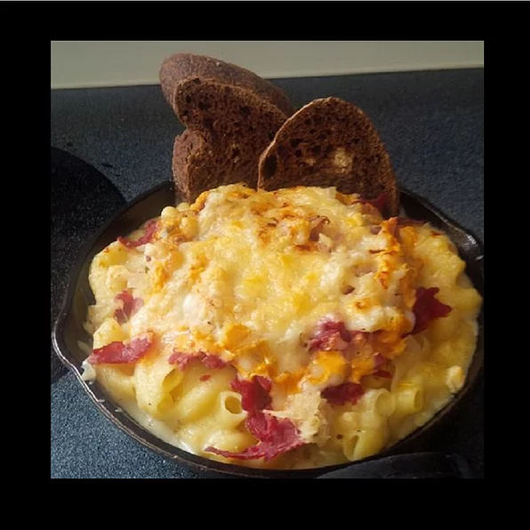

Reuben Mac

Description
Prep: 30mins
Cook: 30mins
Ingredients
- 8 ounces large elbow macaroni
- ¼ cup butter
- ¼ cup all-purpose flour
- ½ teaspoon spicy brown mustard
- ¼ teaspoon salt
- ¼ teaspoon ground black pepper
- ⅛ teaspoon cayenne pepper, or to taste
- ⅛ teaspoon garlic granules
- 1 cup half-and-half
- 1 cup whole milk
- 12 ounces shredded aged Gouda cheese (such as Frisian Farms®), divided
- 4 ounces chevre (goat cheese)
- 1 ½ ounces blue cheese (such as Maytag®), divided
- 1 cup diced corned beef, warmed
- ½ cup sauerkraut (such as Frank's®), warmed
- ¼ cup Thousand Island dressing
- 6 slices rye bread
Steps
- Bring a large pot of lightly salted water to a boil. Cook elbow macaroni in the boiling water,
stirring occasionally, until tender yet firm to the bite,
about 8 minutes. Drain and set aside.
- Meanwhile, melt butter in a large skillet over medium-high heat.
Whisk flour in gradually until smooth.
Cook and whisk continually for 2 minutes.
Add mustard, salt, pepper, cayenne, and garlic; stir to combine.
Gradually whisk in half-and-half and milk. Cook, whisking continually, until thickened, 8 to 10 minutes. Add 9 ounces Gouda cheese and stir. Add chevre and 1 ounce blue cheese and stir until smooth. Remove skillet from heat.
Stir cooked macaroni into cheese mixture.
- Set an oven rack about 6 inches from the heat source and preheat the oven's broiler.
- Divide macaroni and cheese into 6 greased 6-inch cast iron skillets. Top each with corned beef, sauerkraut,
a drizzle of Thousand Island dressing,
and equal amounts of remaining Gouda and blue cheeses.
- Broil skillets in the preheated oven until cheese is golden brown, 3 to 5 minutes.
- Toast rye bread in a toaster and cut each slice diagonally into points. Serve rye bread with Reuben mac.